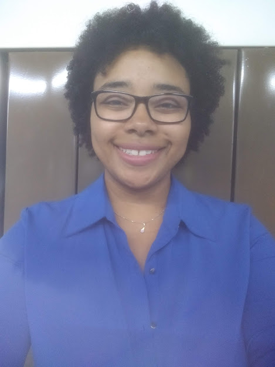

Juliana Ananias
Desenvolvedora Front End em Desenvolvimento
Formada em Fisioterapia há 10 anos, já atuei em clínicas e em hospital público, sempre na área de ortopedia e terapia manual. Também tive a experiência de atuar com esporte adaptado, e através desse contato, pude participar das paralimpíada Rio2016, como fisioterapeuta voluntária. Atualmente, estou em transição de carreira para a área da tecnologia, mais especificamente, para ser desenvolvedora front end. Tem sido desafiador e enriquecedor. Tem valido a pena.